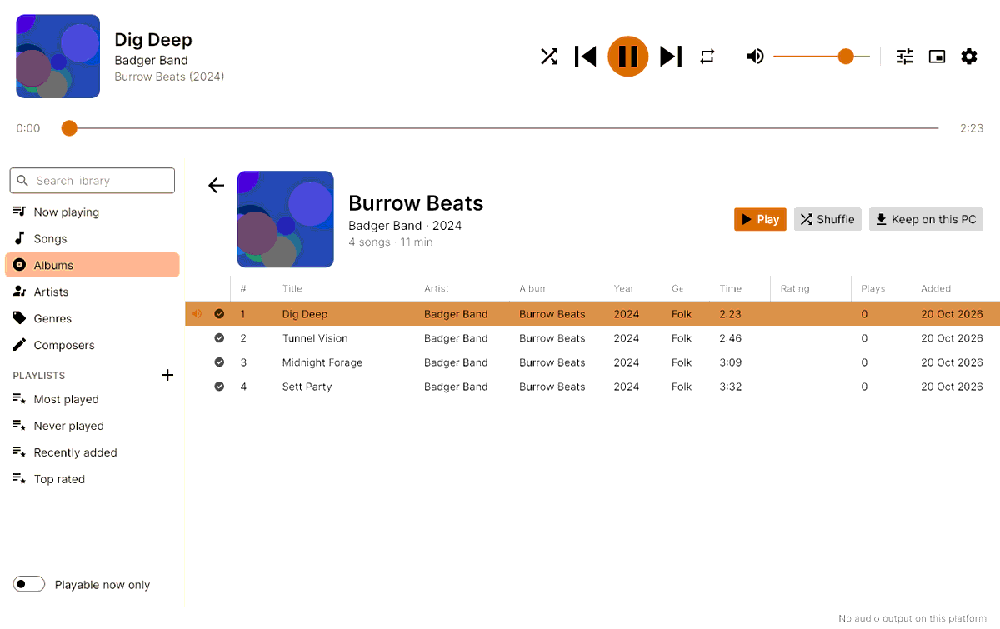
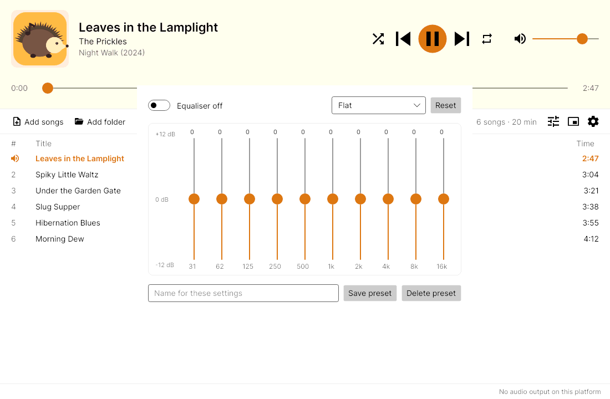
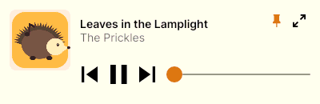
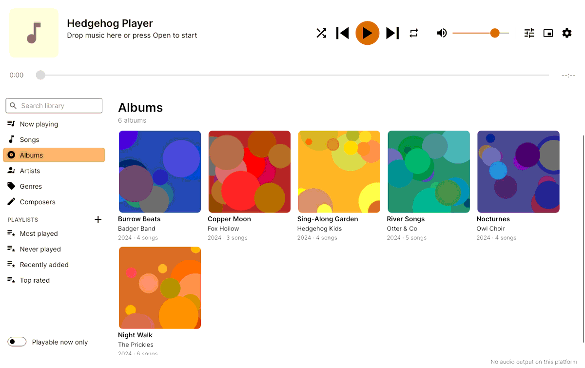
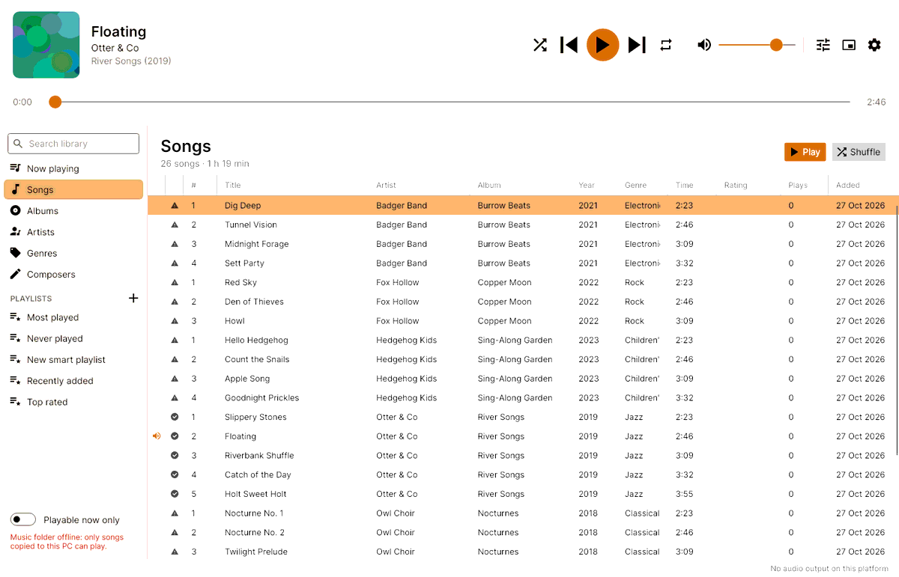

2026-11-25
Hedgehog Player is a music player I'm building for our family's Windows PCs. All our music lives on the Unraid server, and I wanted one app that everyone, kids included, can use to play it, look after the library, and eventually load music onto old iPods and MP3 players.

The Player
The player came first, and I wanted it to sound right before anything else:
- Plays MP3, FLAC, WAV, OGG, Opus, AAC and ALAC
- Gapless playback, so live albums and DJ mixes don't stop between tracks
- Crossfade that turns itself off between songs on the same album
- ReplayGain volume levelling, so quiet and loud albums play at the same level
- A 10-band equaliser with presets
- Windows media keys and the "now playing" overlay
- A mini player that can stay on top of other windows


The Library
The library builds itself from the music on the NAS: songs, albums with artwork, artists, genres and composers, with instant search. It also does playlists and smart playlists, ratings and play counts, tag editing for one song or many at once, and volume measurement for songs that don't have ReplayGain tags yet. Album art comes from the files, a cover image in the folder, or MusicBrainz.

Music Even When the NAS Is Off
Each PC quietly copies the songs you play, the whole album by default, so they keep playing when the server is off or the laptop is away from home. You can also mark albums, artists and playlists Keep on this PC to always have them. When the NAS can't be reached, songs that can't play are marked, and Playable now only hides them.

How It Uses Jellyfin
Hedgehog Player leans on a Jellyfin server running on the Unraid box. Rather than every PC scanning thousands of files over the network, Jellyfin indexes the music once and each PC syncs the library from it in seconds, along with album artwork. The songs themselves still play straight from the NAS's mapped drive, and ratings, play counts and playlists stay on each PC. It can also just scan a music folder without Jellyfin, but with a big library Jellyfin makes it much quicker.
Setting it up takes four steps:
- Install Jellyfin on Unraid and give its container your music share, e.g. as
/data/music - Add a Music library in Jellyfin pointing at that folder
- Create an API key under Dashboard, then API Keys
- In Hedgehog's settings, enter the server address and key, pick the library, and tell it where the same folder is on the PC (e.g.
M:\)
What's Next
The player and library are done. Next up:
- Syncing music to old iPods and MP3 players
- Themes
- A kids mode with a simpler screen, explicit songs hidden, and a PIN to switch back